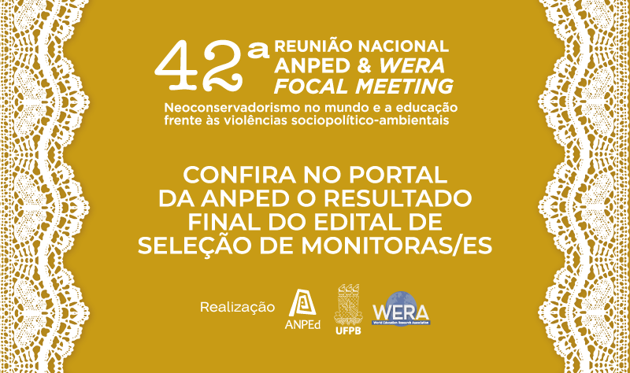
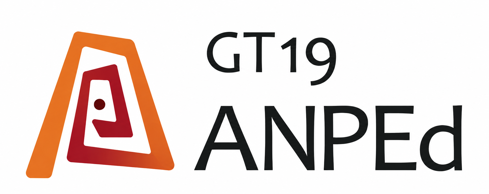
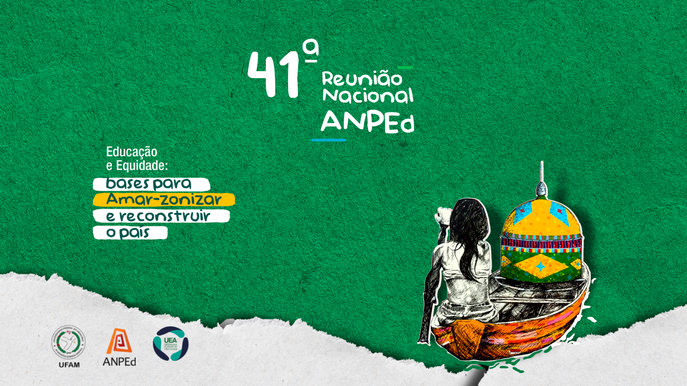
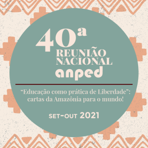
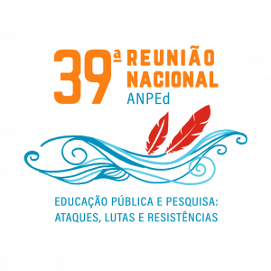
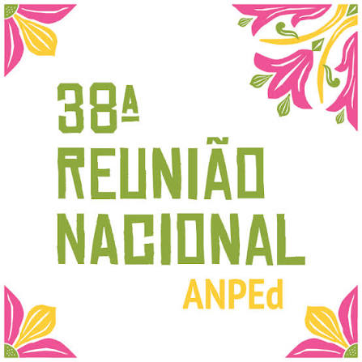
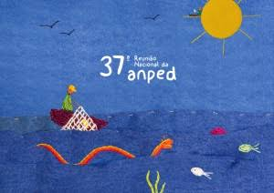

42ª Reunião Nacional
Neoconservadorismo no mundo e a educação frente às violências sociopolítico-ambientais.
Coordenação do GT19Celi Espasandin Lopes FaE/UFMGJúlio César Augusto do Valle USP

História, encontros e produção científica do Grupo de Trabalho 19.

Neoconservadorismo no mundo e a educação frente às violências sociopolítico-ambientais.

Educação e Equidade: bases para Amar-zonizar o país.

Educação como prática de liberdade: cartas da Amazônia para o mundo!

Educação Pública e Pesquisa: ataques, lutas e resistências.

Democracia em risco: a pesquisa e a pós-graduação em contexto de resistência.

Plano Nacional de Educação: tensões e perspectivas para a educação pública brasileira.
26 a 30 de outubro de 2025João Pessoa, PB
Neoconservadorismo no mundo e a educação frente às violências sociopolítico-ambientais.
Celi Espasandin LopesFaE/UFMG
Júlio César Augusto do ValleUSP
22 a 27 de outubro de 2023Manaus, AM
Educação e Equidade: bases para Amar-zonizar e reconstruir o país.
Reginaldo Fernando CarneiroUFJF
Flávia dos Santos SoaresUFF
20 a 24 de outubro de 2019Niterói, RJ
Educação Pública e Pesquisa: ataques, lutas e resistências.
Andréia Maria Pereira de OliveiraUFBA
Cármen L. B. PassosUFSCar
Tente remover algum filtro ou pesquisar outro termo.
A criação do Grupo de Trabalho de Educação Matemática
Pesquisas sobre o GT19
Esta seção reunirá trabalhos que analisam a história, a produção, as temáticas, as redes de colaboração e os modos de organização do GT19 da ANPEd.
Edição especial “25 anos do GT-19 da ANPEd” · Educação Matemática Pesquisa, v. 27, n. 4 (2025)
É com grande satisfação que apresentamos o número comemorativo dos 25 anos do GT 19 (Educação Matemática) da Associação Nacional de Pós-Graduação e Pesquisa em Educação (ANPEd), criado em 1999 na 22.ª reunião anual da ANPEd, destacando seu papel fundamental como espaço de discussão e produção científica em Educação Matemática.
Este estudo objetiva investigar e discutir as principais contribuições do GT-19 da ANPEd para o desenvolvimento da Educação Matemática brasileira, ao longo de seus 25 anos de existência, seja como campo profissional ou científico. O corpus básico de análise é constituído por seis estudos que compõem um dossiê temático e que foram realizados por pesquisadores que participaram da comunidade formada pelo GT-19, explorando e examinando aspectos, temáticas e eventos relevantes dessa trajetória. A análise deste corpus deu-se mediante revisão narrativa que consiste na inquirição e no tratamento analítico e interpretativo quase-sistemático dos fenômenos ou temáticas dos estudos deste GT. Os resultados dessa revisão relevam que o GT-19 da ANPEd, ao longo de seus 25 anos, consolidou-se como espaço plural e dinâmico de pesquisa, formação e resistência, legitimando e dando visibilidade à Educação Matemática como campo educacional e científico. O grupo superou tensões iniciais, construiu identidade epistemológica própria, enfrentando desafios sociais e políticos, inclusive o neoliberalismo e a crise sanitária. Sua contribuição diferencial é evidenciada na articulação entre pesquisa, formação e prática docente, currículo, políticas educacionais, tecnologias digitais e na defesa da democracia, da justiça social e de uma escola pública inclusiva, buscando promover currículos críticos, decoloniais e socialmente relevantes, que afirmam a Educação Matemática brasileira como campo interdisciplinar e transformador.
Neste ano em que o grupo de trabalho de Educação Matemática (GT19) da ANPEd completa 25 anos apresenta-se uma excelente oportunidade para lançar um olhar retrospectivo e fazer um exercício de análise sobre dois pontos de interesse para a comunidade de educadores matemáticos brasileiros, por serem aspectos que, ao mesmo tempo que parecem provocar certo estranhamento, são, eles mesmos, reveladores do que são e do modo como se conformam áreas de conhecimento conexas no seu processo de construção. São eles: 1) as circunstâncias que levaram à criação do grupo em 1997 no interior da ANPEd, visto como uma espécie de enclave entre territórios com fronteiras aparentemente bem demarcadas; e 2) os principais elementos que, no percurso de existência e ações empreendidas pelo GT, conferem à Educação Matemática (EM) estatuto epistemológico de um campo de práticas e de investigação. Reconhecendo o caráter até certo ponto pedagógico e educativo que o processo da criação e do desenvolvimento desse grupo encerra, este texto objetiva explicitar, analisar e compreender o lugar da EM e a sua relação com a área de Educação, buscando identificar convergências – bem como tensões e disputas que fazem parte da sua história. Tomam-se como fonte de dados os diferentes textos e dossiês produzidos pelo GT a partir das reuniões anuais da ANPEd, desde 2004. Atualmente, a articulação entre as áreas de EM e Educação tem sido uma contingência inescapável, dadas as suas características e fins convergentes, colocando o GT19 em diálogo com os demais GT da ANPEd.
Este artigo integra o dossiê em comemoração aos 25 anos de história do GT19 – Educação Matemática da ANPEd. O objetivo é descrever, analisar e discutir os modelos de proposição dos trabalhos encomendados do GT19 – Educação Matemática, as temáticas abordadas, os pesquisadores responsáveis, a consolidação do campo da Educação Matemática em âmbito nacional e o diálogo com as produções internacionais dos trabalhos produzidos entre 2002 e 2023. Ao longo dessas duas décadas, o GT19 tem sido um espaço fundamental para a discussão e o avanço das investigações na área. Nesse período, ocorreram debates sobre pesquisas em Educação Matemática, formação de professores e desenvolvimento profissional, currículo, políticas públicas e ensino de Matemática, além da Educação Matemática em diferentes etapas da Educação Básica. Assim, este estudo pretende não apenas mapear as principais tendências temáticas que permearam os trabalhos encomendados, mas também refletir sobre desafios e perspectivas para o futuro da Educação Matemática no Brasil.
Este artigo traz um panorama histórico do GT19 – Educação Matemática, criado em 1999 na 22.ª reunião anual da ANPEd, destacando seu papel fundamental como espaço de discussão e produção científica em Educação Matemática. Ao longo de seus 25 anos de existência, o GT19 se consolidou como um importante fórum para pesquisadores, professores e estudantes de pós-graduação, promovendo a troca de ideias e a articulação entre diferentes vertentes da Educação Matemática, em diálogo e debate com outras áreas da Educação. O artigo visa abordar a memória coletiva construída ao longo das reuniões, da produção do GT19 e dos relatórios de atividades, ressaltando e acompanhando sua contribuição para a difusão da pesquisa em Educação Matemática. Especificamente, traçou-se uma análise das temáticas priorizadas nos trabalhos encomendados e nos minicursos, ressaltando os focos de investigação envolvidos nessas atividades.
A pesquisa narrativa e com narrativas tem crescido na área de Educação Matemática, o que pode ser visto também nos trabalhos apresentados no GT 19 – Educação Matemática nas Reuniões Nacionais da Associação Nacional de Pesquisa e Pós-Graduação em Educação, ANPEd. Neste artigo, tem-se como questão de pesquisa: quais perspectivas de pesquisa narrativa estão presentes nos trabalhos publicados nas reuniões do GT 19 – Educação Matemática da ANPEd? E como objetivo: mapear e analisar os trabalhos que abordam narrativas, publicados nas reuniões do GT 19 – Educação Matemática desde sua criação. Para tanto, realizou-se um levantamento nos anais das Reuniões Nacionais de 2000 a 2023 e encontraram-se 44 trabalhos que mencionam narrativas no texto. Emergiram dos dados quatro eixos de análise: pesquisa narrativa, dispositivos de pesquisa e de formação de professores, dispositivos de produção de dados e o termo “narrativa” em outros cenários de pesquisa. A análise dos dados mostrou um aumento dos trabalhos que têm utilizado essa abordagem de pesquisa nas últimas reuniões e revelou também a polissemia do termo “narrativa”. Os trabalhos apresentados indicam a potencialidade da pesquisa narrativa para o desenvolvimento profissional, valorizam a narrativa para a produção de dados, para a pesquisa e a formação. Também utilizam, em sua maioria, um referencial teórico comum que considera a pesquisa narrativa uma abordagem teórico-metodológica que teoriza o vivido, ao primar pela experiência de si e do outro em todo o processo da investigação.
O artigo apresenta reflexões sobre o uso das tecnologias digitais no campo da Educação Matemática. Em especial, problematiza as formas pelas quais essas tecnologias se entrelaçam com os processos de ensino e de aprendizagem da matemática e na pesquisa. O material empírico é constituído pelos trabalhos apresentados no GT 19 – Educação Matemática da ANPEd, no período de 2000 a 2023, que mencionaram, no título ou no resumo, o uso de tecnologias. A análise semântica do material envolveu as seguintes dimensões: mapear tecnologias e conhecimentos matemáticos explorados nas investigações; trazer alguns resultados sobre a inserção das tecnologias nas aulas de Matemática; e elucidar a abordagem adotada da tecnologia — meio, ferramenta ou artefato — nos estudos. Evidencia-se uma diversidade de tecnologias nos estudos e o movimento do computador desconectado ao dispositivo em rede. Sugere-se análise futura sobre a caracterização da tecnologia como modo de expressão ou de revelação.
Este artigo se refere a uma revisão sistemática dos trabalhos apresentados durante as 20 reuniões anuais da Associação Nacional de Pesquisa em Educação (ANPEd) no Grupo de Trabalho de Educação Matemática (GT 19). Evidencia-se a quantidade de trabalhos apresentados em cada ano e, dentre esses, quantos e quais trazem Paulo Freire como referência. Busca-se responder à questão: quais pesquisas, apresentadas no GT 19 ao longo dos seus 25 anos de existência, dialogam com Paulo Freire e quais os conceitos que se destacam nelas? Para tanto, com base metodológica nos elementos constitutivos de uma revisão sistemática, realizou-se a análise do conjunto desses trabalhos. Os resultados mostram que o GT 19 vem se consolidando ao longo dos anos com uma diversidade temática, teórica e metodológica, e estabelece um diálogo tímido com a perspectiva freireana.
Fonte: edição especial da revista.